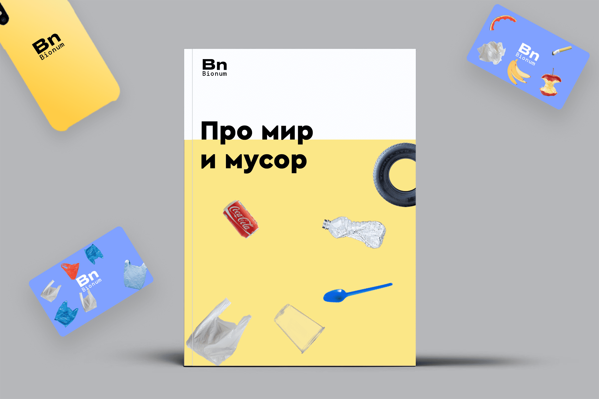
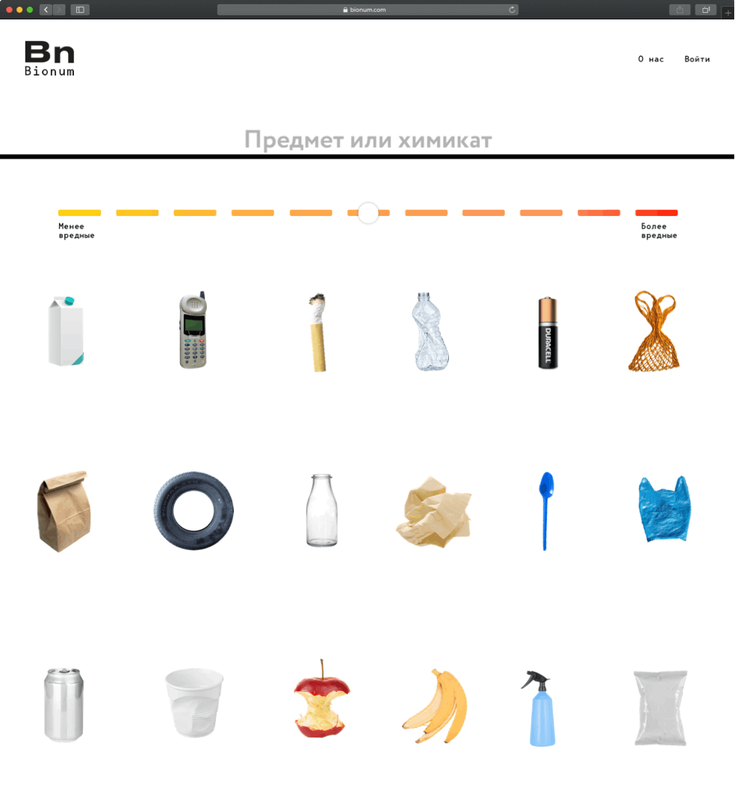

Разработка айдентики и дизайна сайта
Бионум — это сервис, который рассказывает про то, как обычные бытовые предметы влияют на окружающую среду и на жизнь человека.
Графика
Отличие Бионума от остальных изданий про экологию, это то, что там просто и по-научному рассказывается про влияние предметов. Поэтому в фирменной графике и логотипе отображается слияние науки и простоты. Предметы являются основой графики и хорошо выделяются в контексте всего визуального контента.




Главная страница
На главной странице сразу дается возможность найти любой предмет и почитать про него. Также, на главной странице выдается интересный контент в фирменном стиле Бионума. Так, люди погружаются в тематику.


Статьи
В Бионуме собраны все привычные человеку домашние и бытовые предметы. На каждый предмет пишется отдельная статья, где и рассказывается про его влияние на человека и среду. Любой желающий может добавить новый предмет и написать к нему статью. А редакция все проверит и выложит.
